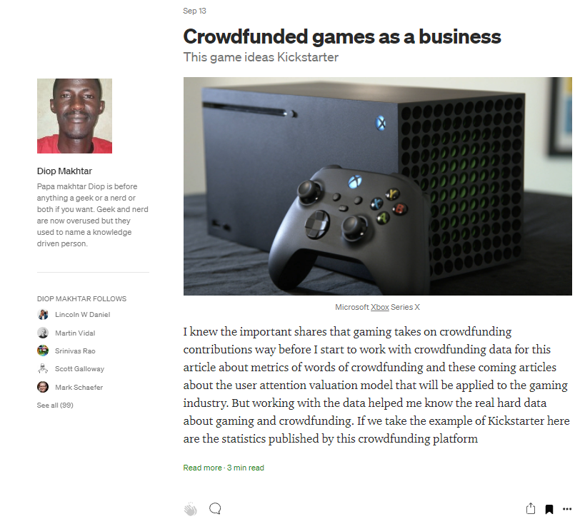

Analytics of Crowdfunded Games


There are indie game studios considering the path of crowdfunding for this next game idea that they are working on. You the tech enablers could forecast all the data about past crowdfunded games and make analyses that could help make better game crowdfunding campaigns because indie games studios game engine engineers, game designers, animation specialists, and 3d modelers are busy doing this meaningful work that will make this game to be crowdfunded the best Game.
I highlighted you also with this article in the screenshot another segment of people, startups, and investment companies that will need this tech enable platform about game crowdfunding campaign analysis and optimizing like finding the right audience for the game to be crowdfunded and building segment of game backers using past crowdfunded game projects. This will require a lot of data to be sourced and processed but your knowledge about pipelines of data processing and artificial intelligence will help you do it easily. Once you have the data you could use your frontend engineering skill to provide us with a creative and simple to use interface for consuming the metrics and inputting ours for the backend servers that you have built with your backend engineering skill provides us the results that your AI systems have produced for us to see better what matter to us for getting this next game project a successfully funded project.
You have a tech-enabled platform with two segments of possible users and please remark that you can be this second kind of user because you could be this tech entrepreneur executing this business model of crowdfunding games because you know how to better crowdfund games and have a very good piece of technology that will assist you in this business and make you become the leader of this new market that you have created.
I think that Joel Spolsky used his knowledge of the people of the game industry gained with this past experience at EA to start FogBugz with a segment of game developers who he knew their pains at work and he has been blogging about these developers pains of working 90 hours per day and you can read these article on Joel’s blog here. You also should know the segment of users that you will target with this tech-enabled platform of Analytics of Crowdfunded Game